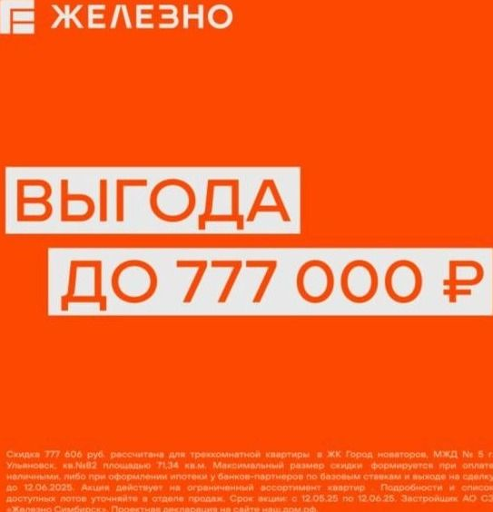

Ж
Железно | Ульяновск
Презентация
Презентация НОВОГО и самого большого проекта в Ульяновске — Города новаторов. Это не просто жилой комплекс, а ОГО-ГО какой ГОРОД, где есть абсолютно всё.
14 декабря 2023
Как написали бы сейчас: 14 декабря показываем самый большой проект в Ульяновске: 67 гектаров, школа на 1 500 мест, пруды. Смотрите в прямом эфире — будет ого-го.
Идея названа в первом же посте
Ого-го, какие интересные зелёные дворы! В Городе новаторов перед жителями открыт безопасный зелёный мир без машин.
19 февраля 2024
Как написали бы сейчас: Во дворах «Города новаторов» нет машин: площадки для спорта, зоны отдыха и тишина. Ого-го, какие дворы.
«Ого-го» описывает продукт
Ж
Железно | Ульяновск
Старт
Новость с пометкой «молния»: мы объявляем предбронирование квартир в доме №2 в большом и современном Городе новаторов.
20 апреля 2024
Как написали бы сейчас: Дом №2: открываем предбронирование. Кирпич, эркеры, двор без машин.
Масштаб — в каждом анонсе

Ж
Железно | Ульяновск
Активация
Выгода до 777 000 ₽ на ОГО-ГО какие квартиры. В ЖК «Город Новаторов» открыт старт продаж дома №5.
16 мая 2025
Как написали бы сейчас: Дом №5 в продаже. До 12 июня — выгода до 777 000 ₽ на старте: лучшие планировки и самые низкие цены.
Даже оффер говорит голосом идеи